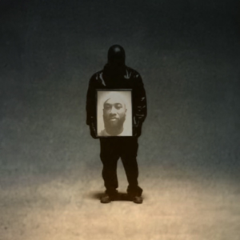

ახალი მუსიკალური ტალღა - ახალი ალბომები და სიმღერები რომლებიც არ უნდა გამოტოვოთ!
Hit Me Hard and Soft - Billie Eilish

ეს არაჩვეულებრივი ალბომი გამოიშვა 17 მაისს და მალევე მოიპოვა დიდი პოპულარობა. ამ ალბომიდან ყველაზე პოპულარულ სიმღერას “Birds Of A Feather” ერთ-ერთ ყველაზე ცნობილ მუსიკის აპლიკაცია Spotify-ში უკვე 1,315,660,632 მოსმენა აქვს!
Vultures 2 – Kanye West & Ty Dolla $ign
ამ ცნობილი ალბომის გამოშვება ბევრჯერ გადაიდო, თუმცა 3 აგვისტოს საბოლოოდ გამოიშვა და უამრავი გულშემატკივარი გაახარა.
Lyfestyle – Yeat
ეს შთამბეჭდავი ალბომი სულ ახლახანს, 18 ოქტომბერს გამოიშვა. თუ ანდერგრაუნდის მოყვარულებს ჯერ კიდევ არ მოგისმენიათ ამ ალბომისთვის, გირჩევთ არ დაიცადოთ.
Chromakopia – Tyler, the Creator
ეს რეპ-ალბომი ძალიან მალე, 28 ოქტომბერს გამოდის და უამრავი გულშემატკივარი მოუთმენლად ელოდება მას.
Don’t Be Dumb – A$AP Rocky
ეს ალბომი წესით 30 აგვისტოს უნდა გამოსულიყო, თუმცა გადაიდო და სავარაუდოდ 2024 წლის ბოლოს გამოიშვება.
Short n’ Sweet – Sabrina Carpenter

საბრინას ახალი პოპ ალბუმი გამოიშვა 23 აგვისტოს და მაშინვე მიიპყრო ახალგაზრდების ყურადღება. ეს ალბუმი მეტყველებს მის განვითარებაზე და იგი უფრო და უფრო პოპულარული ხდება.